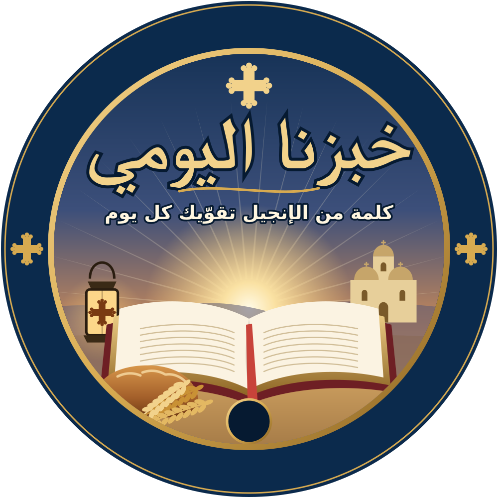
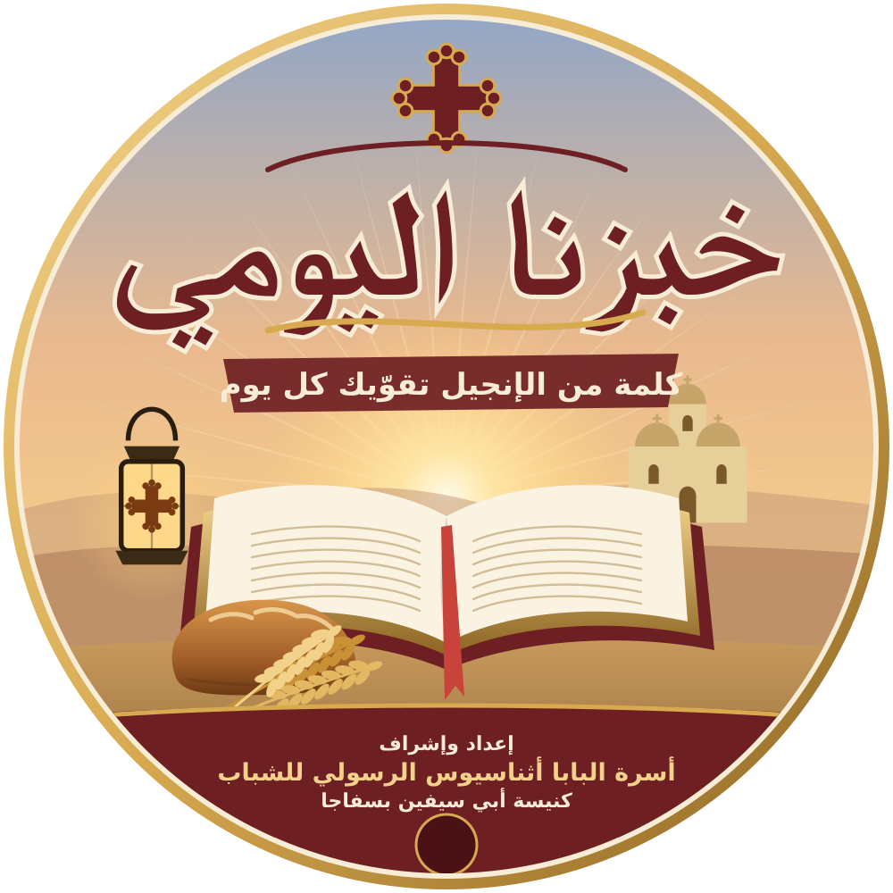
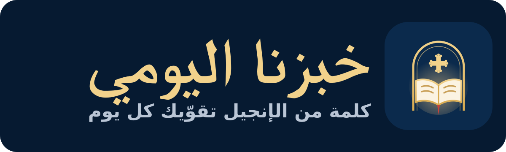
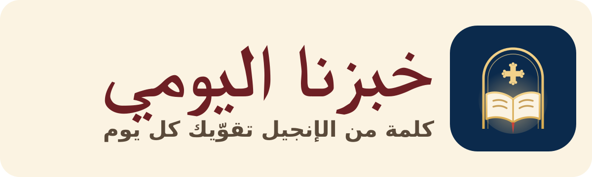

مبنية على الصورة المرجعية اللي اخترتها (دايرة، صليب فوق، الاسم كبير، الفجر، الفانوس، الكتاب المفتوح بالشريط الأحمر، العيش والقمح، الكنيسة، والتوقيع)، لكن فيكتور SVG بالكامل وبألوان وعناصر لوجو الأسرة: الكحلي، الحلقة الدهبي، الصليب القبطي، خط الرقعة، والحلقة اللي فيها كتابة زي لوجو الأسرة بالظبط. كل طبقة (السما، الشمس، الكتاب، العيش، القمح، الفانوس، الكنيسة، العنوان) مجموعة باسمها، فبتفتح في Illustrator كطبقات منفصلة، وهي نفسها اللي بتتحرك في الانترو.

الحلقة الكحلي فيها التوقيع زي لوجو الأسرة: «إعداد وإشراف أسرة البابا أثناسيوس الرسولي للشباب» فوق، و«كنيسة أبي سيفين بسفاجا» تحت، في نص الحلقة بعيد عن الدهبي. الشعار تحت «خبزنا اليومي» على طول، ولوجو الأسرة صغير كختم عند رجل الكتاب. الخطوط: الرقعة للاسم بس، وCairo لكل الباقي.

سما دافية، اسم بالعنابي، شريط الشعار، وشريط التوقيع العنابي تحت فيه لوجو الأسرة. أدفى وأقرب للمرجع، بس ألوانه بعيدة شوية عن الموقع الكحلي. مناسب لو اخترنا شكل «الفجر» الفاتح لصفحة القراءة.
اللوجو الكامل مليان تفاصيل وميتقريش في ٤٨ بكسل. العلامة دي للإشعار، وأيقونة التطبيق، وشريط الصفحة: نفس قوس الأيقونسطاس اللي في الموقع، كتاب مفتوح شكله رغيف، الصليب طالع زي الشمس، والشريط الأحمر.


logo-b-family.svglogo-a-dawn.svgmark-c.svgmark-c-transparent.svglockup-dark.svglockup-light.svg